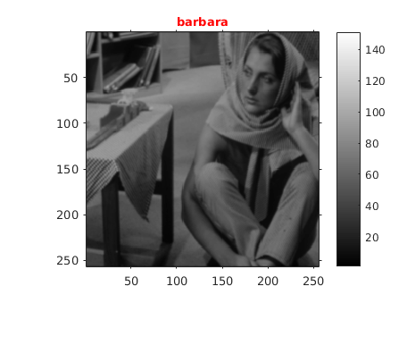
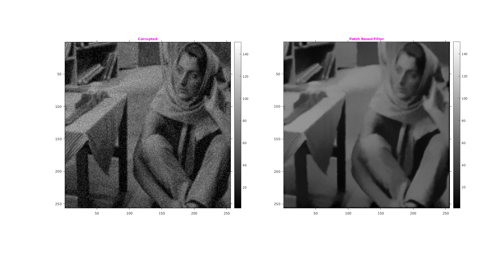
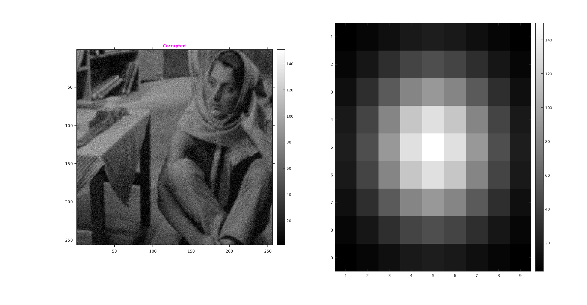
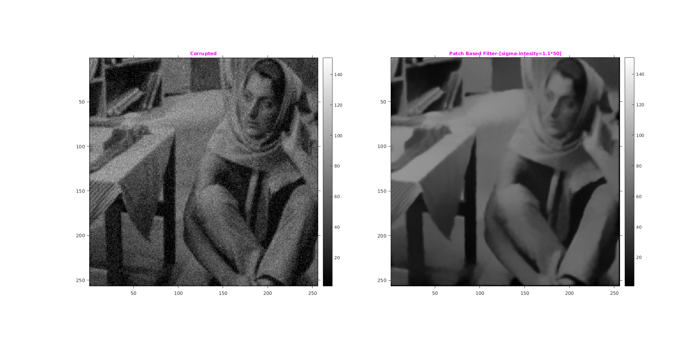

Assignment 1 -- Question 1
CS-663 Group-16305R011,163059009,16305R006
Contents
Intialization
file='../data/barbara.mat'; cmap=150; scale=1/2; l = load(file); img1=l.imageOrig; imgShrink = imresize(img1,scale); GaussianFilter=fspecial('gaussian',[9,9],0.66); GaussianBlurResizedImage=imfilter(imgShrink,GaussianFilter);
Original Image
tic; img=GaussianBlurResizedImage; figure('name','Original Image'); imshow(GaussianBlurResizedImage,colormap(gray(cmap))); title('\fontsize{10}{\color{red}barbara}'); axis tight,axis on; o1 = get(gca, 'Position'); colorbar(),set(gca, 'Position', o1);
Patch base filtering
myPatchBasedFiltering function take image, then it corrupts the image by Guassain nosie with sigma 5% of the intensity range. After that it process the noisy by the Patch Based filtering. For performing the Patch Based filtering for Intensity region it use Gaussian Kernel with below configuration as input:
% % * Sigma Intensity: 50 % * Window Size: 25x25 % * Patch Size: 9x9 % % *Output:* Returns three thing respectively % % # Corruted/Noisy image % # Filtered Image % # RMSD of Filtered and Original image..... %
Assumptions made
We resize the image by subsampling by a factor of 2 along each dimension, and then applied Gaussian blur of standard deviation around 0.66 pixel width to the resized image. This is done to reduce the time of the code
Comparison: Tuned parameter
Comparing the result of filtered image with corrupted and original image. RMSD is calculated between filtered and blurred(gaussian) downsampled image.

Time Taken achal
myPatchBasedFiltering takes approx 250 sec to produce result
Observation
With increasing sigma value RMSD value decrease but only to a certain value then it becomes constant.
Tuned-sigma-intensity = 28
tic sigma=2; h=26; [corrupted,filtered,patchMask]=myPatchBasedFiltering(img,cmap,9,25,sigma,h); figure('name','barbara','units','normalized','outerposition',[0 0 1 1]); subplot(1,2,1); imshow(corrupted,colormap(gray(cmap))); title('\fontsize{10}{\color{magenta}Corrupted}'); axis tight,axis on; o1 = get(gca, 'Position'); colorbar(),set(gca, 'Position', o1); subplot(1,2,2); imshow(filtered,colormap(gray(cmap))); title('\fontsize{10}{\color{magenta}Patch Based Filter}'); axis tight,axis on; o1 = get(gca, 'Position'); colorbar(),set(gca, 'Position', o1); % Printing result rmsError=sqrt(sum(sum((filtered-imgShrink).^2))/numel(imgShrink)); fprintf('sigma:%d h:%d RMS of the image blur:%f\n',sigma,h,rmsError); toc pause(2); % RMS of the image blur:4.855540 : sig= 0.6 20 % RMS of the image with orig:6.477611 % RMS of the image blur:7.010939 sigm 2 20 % sigma:1 spatch:20 RMS of the image blur:5.008471 % sigma:1 spatch:20 RMS of the image blur:6.566200 % sigma:2 spatch:26 RMS of the image blur:5.131378 % sigma:2 spatch:18 RMS of the image blur:6.708316 -- good
i=1 i=2 i=3 i=4 i=5 i=6 i=7 i=8 i=9 i=10 i=11 i=12 i=13 i=14 i=15 i=16 i=17 i=18 i=19 i=20 i=21 i=22 i=23 i=24 i=25 i=26 i=27 i=28 i=29 i=30 i=31 i=32 i=33 i=34 i=35 i=36 i=37 i=38 i=39 i=40 i=41 i=42 i=43 i=44 i=45 i=46 i=47 i=48 i=49 i=50 i=51 i=52 i=53 i=54 i=55 i=56 i=57 i=58 i=59 i=60 i=61 i=62 i=63 i=64 i=65 i=66 i=67 i=68 i=69 i=70 i=71 i=72 i=73 i=74 i=75 i=76 i=77 i=78 i=79 i=80 i=81 i=82 i=83 i=84 i=85 i=86 i=87 i=88 i=89 i=90 i=91 i=92 i=93 i=94 i=95 i=96 i=97 i=98 i=99 i=100 i=101 i=102 i=103 i=104 i=105 i=106 i=107 i=108 i=109 i=110 i=111 i=112 i=113 i=114 i=115 i=116 i=117 i=118 i=119 i=120 i=121 i=122 i=123 i=124 i=125 i=126 i=127 i=128 i=129 i=130 i=131 i=132 i=133 i=134 i=135 i=136 i=137 i=138 i=139 i=140 i=141 i=142 i=143 i=144 i=145 i=146 i=147 i=148 i=149 i=150 i=151 i=152 i=153 i=154 i=155 i=156 i=157 i=158 i=159 i=160 i=161 i=162 i=163 i=164 i=165 i=166 i=167 i=168 i=169 i=170 i=171 i=172 i=173 i=174 i=175 i=176 i=177 i=178 i=179 i=180 i=181 i=182 i=183 i=184 i=185 i=186 i=187 i=188 i=189 i=190 i=191 i=192 i=193 i=194 i=195 i=196 i=197 i=198 i=199 i=200 i=201 i=202 i=203 i=204 i=205 i=206 i=207 i=208 i=209 i=210 i=211 i=212 i=213 i=214 i=215 i=216 i=217 i=218 i=219 i=220 i=221 i=222 i=223 i=224 i=225 i=226 i=227 i=228 i=229 i=230 i=231 i=232 i=233 i=234 i=235 i=236 i=237 i=238 i=239 i=240 i=241 i=242 i=243 i=244 i=245 i=246 i=247 i=248 i=249 i=250 i=251 i=252 i=253 i=254 i=255 i=256 sigma:2 h:26 RMS of the image blur:7.582579 Elapsed time is 442.553041 seconds.
Kernel
%mask used to make patches isotropic, as an image.
imagesc(uint8(patchMask*cmap)),colormap(gray(cmap)),colorbar();
pause(2);
 i) Comparison: (0.9 x tuned-sigma-intensity)
[corrupted,filtered,patchMask]=myPatchBasedFiltering(img,cmap,9,25,sigma,0.9*h); figure('name','barbara','units','normalized','outerposition',[0 0 1 1]); subplot(1,2,1); imshow(corrupted,colormap(gray(cmap))); title('\fontsize{10}{\color{magenta}Corrupted}'); axis tight,axis on; o1 = get(gca, 'Position'); colorbar(),set(gca, 'Position', o1); subplot(1,2,2); imshow(filtered,colormap(gray(cmap))); title('\fontsize{10}{\color{magenta}Patch Based Filter-[sigma-intesity=0.9*50]}'); axis tight,axis on; o1 = get(gca, 'Position'); colorbar(),set(gca, 'Position', o1); % Printing result rmsError=sqrt(sum(sum((filtered-imgShrink).^2))/numel(imgShrink)); fprintf('sigma:%d h:%d RMS of the image blur:%f\n',sigma,h,rmsError);
i=1 i=2 i=3 i=4 i=5 i=6 i=7 i=8 i=9 i=10 i=11 i=12 i=13 i=14 i=15 i=16 i=17 i=18 i=19 i=20 i=21 i=22 i=23 i=24 i=25 i=26 i=27 i=28 i=29 i=30 i=31 i=32 i=33 i=34 i=35 i=36 i=37 i=38 i=39 i=40 i=41 i=42 i=43 i=44 i=45 i=46 i=47 i=48 i=49 i=50 i=51 i=52 i=53 i=54 i=55 i=56 i=57 i=58 i=59 i=60 i=61 i=62 i=63 i=64 i=65 i=66 i=67 i=68 i=69 i=70 i=71 i=72 i=73 i=74 i=75 i=76 i=77 i=78 i=79 i=80 i=81 i=82 i=83 i=84 i=85 i=86 i=87 i=88 i=89 i=90 i=91 i=92 i=93 i=94 i=95 i=96 i=97 i=98 i=99 i=100 i=101 i=102 i=103 i=104 i=105 i=106 i=107 i=108 i=109 i=110 i=111 i=112 i=113 i=114 i=115 i=116 i=117 i=118 i=119 i=120 i=121 i=122 i=123 i=124 i=125 i=126 i=127 i=128 i=129 i=130 i=131 i=132 i=133 i=134 i=135 i=136 i=137 i=138 i=139 i=140 i=141 i=142 i=143 i=144 i=145 i=146 i=147 i=148 i=149 i=150 i=151 i=152 i=153 i=154 i=155 i=156 i=157 i=158 i=159 i=160 i=161 i=162 i=163 i=164 i=165 i=166 i=167 i=168 i=169 i=170 i=171 i=172 i=173 i=174 i=175 i=176 i=177 i=178 i=179 i=180 i=181 i=182 i=183 i=184 i=185 i=186 i=187 i=188 i=189 i=190 i=191 i=192 i=193 i=194 i=195 i=196 i=197 i=198 i=199 i=200 i=201 i=202 i=203 i=204 i=205 i=206 i=207 i=208 i=209 i=210 i=211 i=212 i=213 i=214 i=215 i=216 i=217 i=218 i=219 i=220 i=221 i=222 i=223 i=224 i=225 i=226 i=227 i=228 i=229 i=230 i=231 i=232 i=233 i=234 i=235 i=236 i=237 i=238 i=239 i=240 i=241 i=242 i=243 i=244 i=245 i=246 i=247 i=248 i=249 i=250 i=251 i=252 i=253 i=254 i=255 i=256 sigma:2 h:26 RMS of the image blur:7.722583
ii) Comparison: (1.1 x tuned-sigma-intensity)
[corrupted,filtered,patchMask]=myPatchBasedFiltering(img,cmap,9,25,sigma, 1.1*h); figure('name','barbara','units','normalized','outerposition',[0 0 1 1]); subplot(1,2,1); imshow(corrupted,colormap(gray(cmap))); title('\fontsize{10}{\color{magenta}Corrupted}'); axis tight,axis on; o1 = get(gca, 'Position'); colorbar(),set(gca, 'Position', o1); subplot(1,2,2); imshow(filtered,colormap(gray(cmap))); title('\fontsize{10}{\color{magenta}Patch Based Filter-[sigma-intesity=1.1*50]}'); axis tight,axis on; o1 = get(gca, 'Position'); colorbar(),set(gca, 'Position', o1); % Printing result rmsError=sqrt(sum(sum((filtered-imgShrink).^2))/numel(imgShrink)); fprintf('sigma:%d h:%d RMS of the image blur:%f\n',sigma,h,rmsError); toc;
i=1 i=2 i=3 i=4 i=5 i=6 i=7 i=8 i=9 i=10 i=11 i=12 i=13 i=14 i=15 i=16 i=17 i=18 i=19 i=20 i=21 i=22 i=23 i=24 i=25 i=26 i=27 i=28 i=29 i=30 i=31 i=32 i=33 i=34 i=35 i=36 i=37 i=38 i=39 i=40 i=41 i=42 i=43 i=44 i=45 i=46 i=47 i=48 i=49 i=50 i=51 i=52 i=53 i=54 i=55 i=56 i=57 i=58 i=59 i=60 i=61 i=62 i=63 i=64 i=65 i=66 i=67 i=68 i=69 i=70 i=71 i=72 i=73 i=74 i=75 i=76 i=77 i=78 i=79 i=80 i=81 i=82 i=83 i=84 i=85 i=86 i=87 i=88 i=89 i=90 i=91 i=92 i=93 i=94 i=95 i=96 i=97 i=98 i=99 i=100 i=101 i=102 i=103 i=104 i=105 i=106 i=107 i=108 i=109 i=110 i=111 i=112 i=113 i=114 i=115 i=116 i=117 i=118 i=119 i=120 i=121 i=122 i=123 i=124 i=125 i=126 i=127 i=128 i=129 i=130 i=131 i=132 i=133 i=134 i=135 i=136 i=137 i=138 i=139 i=140 i=141 i=142 i=143 i=144 i=145 i=146 i=147 i=148 i=149 i=150 i=151 i=152 i=153 i=154 i=155 i=156 i=157 i=158 i=159 i=160 i=161 i=162 i=163 i=164 i=165 i=166 i=167 i=168 i=169 i=170 i=171 i=172 i=173 i=174 i=175 i=176 i=177 i=178 i=179 i=180 i=181 i=182 i=183 i=184 i=185 i=186 i=187 i=188 i=189 i=190 i=191 i=192 i=193 i=194 i=195 i=196 i=197 i=198 i=199 i=200 i=201 i=202 i=203 i=204 i=205 i=206 i=207 i=208 i=209 i=210 i=211 i=212 i=213 i=214 i=215 i=216 i=217 i=218 i=219 i=220 i=221 i=222 i=223 i=224 i=225 i=226 i=227 i=228 i=229 i=230 i=231 i=232 i=233 i=234 i=235 i=236 i=237 i=238 i=239 i=240 i=241 i=242 i=243 i=244 i=245 i=246 i=247 i=248 i=249 i=250 i=251 i=252 i=253 i=254 i=255 i=256 sigma:2 h:26 RMS of the image blur:7.481139 Elapsed time is 1298.925550 seconds.